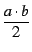
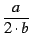

:; και το επικυρώνουμε με το πλήκτρο "Enter". (Στην περίπτωση αυτή
αντί για αποτέλεσμα εμφανίζεται η λέξη Done.)
Συνήθως στην γραμμή εντολών
εισάγουμε τις εντολές μία-μία.
Μπορούμε όμως να εισάγουμε και πολλαπλές εντολές σε μία γραμμή εντολών, πριν την
εκτέλεσή της, με την προυπόθεση να τις διαχωρίσουμε με ; (δηλαδή
το "ελληνικό ερωτηματικό").
Το Xcas πρέπει να μπορεί να διερμηνεύνει τις εντολές που εισάγουμε στις
γραμμές εντολών. Εδώ όμως χρειάζεται προσοχή, διότι ενώ το πληκτρολόγιο μας
επιτρέπει να πληκτρολογήσουμε
ax2 + bx + c, το Xcas δεν μπορεί
να καταλάβει ότι θέλουμε να υψώσουμε το x στο τετράγωνο, να το
πολλαπλασιάσουμε με a, κ.ο.κ... Πρέπει να προσδιορίσουμε κάθε
πράξη, και ο σωστός τρόπος εισαγωγής (η σωστή σύνταξη)
είναι a*x^2+b*x+c.
Ο πολλαπλασιασμός πρέπει να σημανθεί με ένα αστέρι
στις εντολές, διότι αλλιώς το Xcas εκλαμβάνει το
ax σαν μία
μεταβλητή που το όνομα της έχει δύο γράμματα, και όχι σαν το γινόμενο του a
επί το x.
| Πράξεις | |
+ |
πρόσθεση |
- |
αφαίρεση |
* |
πολλαπλασιασμός |
/ |
διαίρεση |
^ |
δύναμη |
Οι προτεραιότητες ανάμεσα στις πράξεις είναι όπως τις ξέρουμε από το σχολείο (ο πολλαπλασιασμός έχει προτεραιότητα στην πρόσθεση, η δύναμη στον πολλαπλασιασμό). Παραδείγματος χάρη :
2*a+b επιστρέφει
2 . a + b
a/2*b επιστρέφει

a/2/b επιστρέφει
normal(a/2/b) επιστρέφει

a^2*b επιστρέφει
a2 . b
Με την προϋπόθεση πως καμία γραμμή εντολών δεν έχει εκτελεσθεί δύο ή
περισσότερες φορές,
οι εντολές, όπως και οι αντίστοιχες απαντήσεις, αριθμούνται σύμφωνα με τον αριθμό της
γραμμής εντολών στην οποία βρίσκονται.
Στην περίπτωση αυτή με την εντολή ans(i-1)
(αγγλ. answer = απάντηση) ανακτούμε το αποτέλεσμα
της εντολής i (ανακτούμε δηλαδή το αποτέλεσμα της εντολής
που βρίσκεται στην γραμμή εντολών με αριθμό i).
Προσοχή: Η αρίθμηση των γραμμών αρχίζει από το 0. Τα παραπάνω δεν ισχύουν αν μια (τουλάχιστον) γραμμή εντολών έχει εκτελεσθεί δύο ή περισσότερες φορές. Στην περίπτωση αυτή, η μεν γραμμή εντολών διατηρεί τον αριθμό που είχε, ενώ η εντολή μαζί με την αντίστοιχη απάντηση αντιστοιχούν σε διαφορετικό αριθμό.
Με την εντολή
ans() ανακτούμε την προηγούμενη απάντηση,
δηλαδή ανακτούμε το αποτέλεσμα της τελευταίας αποτιμημένης εντολής.